- Key Influencers

- Decomposition Tree

Microsoft SQL Server
Data Cleansing and Analysis for National Housing: A SQL Server Approach
Description:
In the realm of National Housing, ensuring the accuracy, reliability, and relevance of data is paramount for informed decision-making and effective policy implementation. The process of data cleansing and analysis, facilitated by the robust capabilities of SQL Server, forms the backbone of a streamlined and insightful approach to managing and interpreting National Housing data.
Data Cleansing:
Data cleansing in the context of National Housing involves a meticulous examination of the dataset to identify and rectify inaccuracies, inconsistencies, and anomalies. SQL Server provides a suite of tools to profile, clean, and standardize the data, ensuring that it meets the highest standards of quality. This phase involves deduplication, validation checks, and normalization to create a foundation of accurate and reliable housing information.
Normalization and Standardization:
Used SQL Server's capabilities to do the normalization and standardization of data, ensuring a consistent and structured format. By eliminating redundancies and organizing data in a uniform manner, National Housing datasets become more accessible and interpretable.
Quality Assurance:
SQL Server's data cleansing tools incorporate rigorous quality assurance mechanisms. Validation rules and integrity constraints are applied to the National Housing data, guaranteeing that it adheres to predefined standards. This proactive approach ensures that the dataset is not only cleansed but also maintained at a high level of quality, instilling confidence in the accuracy of the information.
Data Analysis:
With the cleansed and standardized dataset in place, SQL Server becomes a powerful platform for in-depth data analysis. Employed SQL queries to extract meaningful insights, perform aggregations, and conducted exploratory analyses to uncover trends within the National Housing landscape. SQL Server's querying capabilities enabled a comprehensive examination of factors such as housing affordability, occupancy rates, and regional disparities.
Summary:
In summary, the combined capabilities of data cleansing and analysis using SQL Server provided a comprehensive solution for National Housing authorities. From ensuring data accuracy through cleansing to unlocking valuable insights via analysis.
SQL Code
- Following are some of the snippets from the project
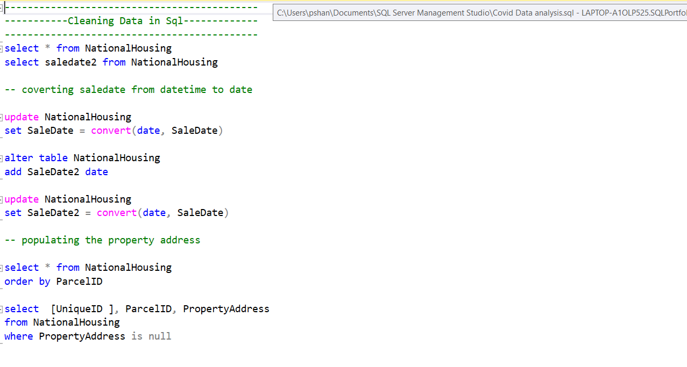
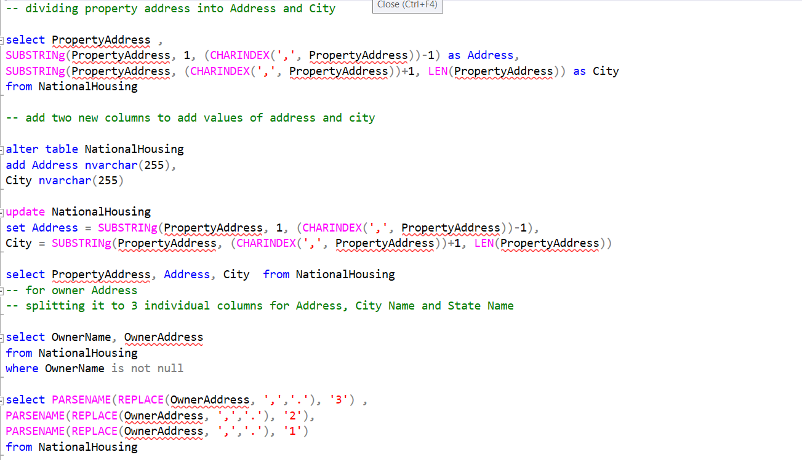
COVID-19 Data Analysis using SQL
Objective/Problem:
Analyzed global COVID-19 data to extract insights into the spread and impact of the pandemic, aiding public health decision-making.
Methodologies/Tools Used:
Utilized SQL for data extraction, transformation, and analysis. Employed SQL queries for managing and querying the COVID-19 dataset.
Data Cleaning and Preprocessing:
Performed rigorous data cleaning to handle inconsistencies, missing values, and duplicate entries. Employed SQL queries to aggregate and standardize the data.
Data Analysis:
Constructed complex SQL queries to calculate key metrics, including daily case trends, mortality rates, and regional comparisons. Employed window functions to analyze rolling averages and identify significant patterns.
Data Visualization:
Generated dynamic visualizations using SQL queries to create insightful charts and graphs. Leveraged Tableau for interactive dashboards, presenting comprehensive views of global and regional COVID-19 trends.
Results and Findings:
Identified hotspots, trends, and potential risk factors, contributing to evidence-based decision-making in public health strategies. The analysis provided actionable insights for resource allocation and intervention planning.
Limitations and Challenges:
Addressed challenges related to data reporting inconsistencies and variations in testing protocols across regions. Acknowledged limitations in relying solely on reported data for a comprehensive analysis.
Conclusion and Next Steps:
The project offered valuable insights into the progression of the pandemic. Future work involves integrating additional data sources for a more comprehensive analysis, considering factors like vaccination rates and healthcare infrastructure. This analysis serves as a foundation for ongoing efforts in monitoring and responding to the evolving COVID-19 situation.
SQL Code
- Following are some of the snippets from the project
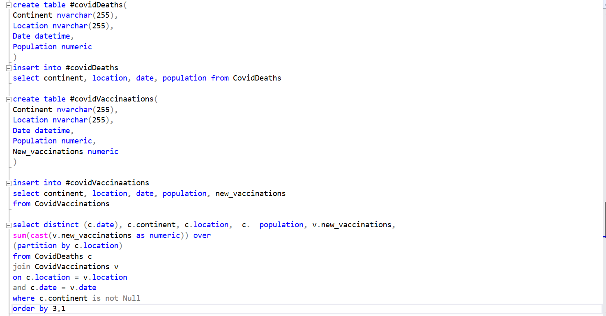
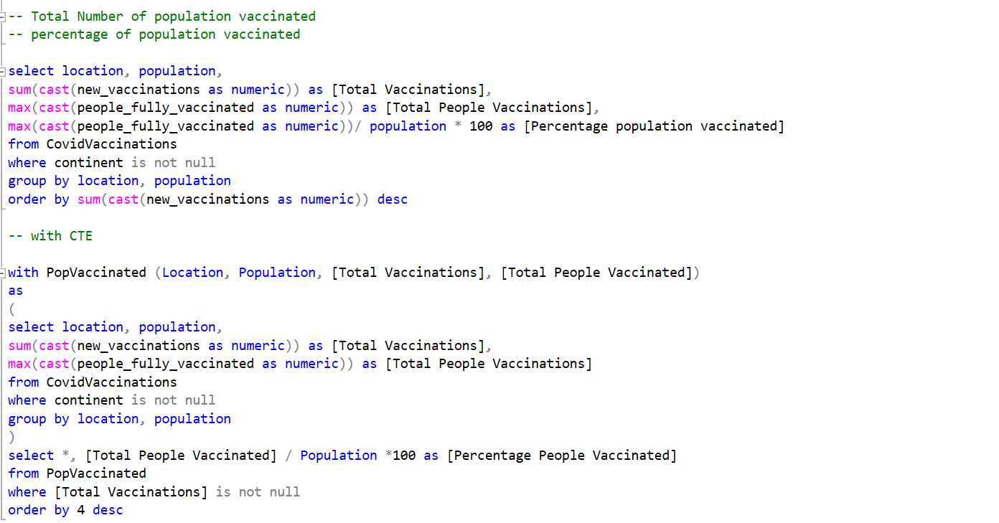
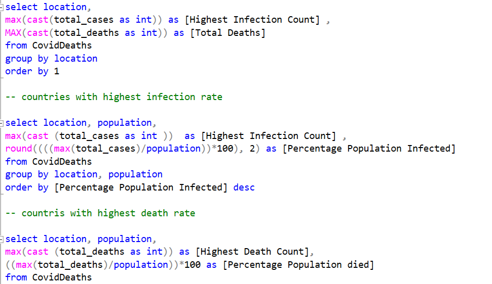
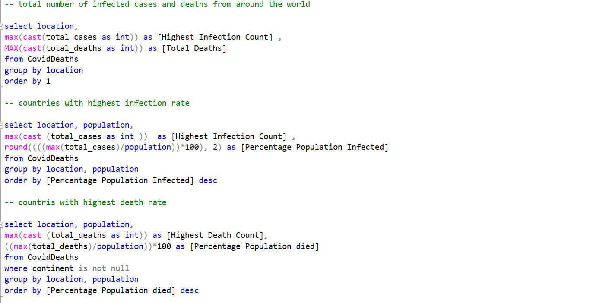
Python Projects (Pandas, Numpy, Matplotlib)
Data Cleansing and Analysis for server data 2020 using Pandas
Server Data Analysis with Python Pandas
Description:
Harnessing the power of Python's Pandas library, server data analysis becomes a seamless and efficient process, offering unparalleled capabilities for extracting, transforming, and visualizing valuable insights. This description highlights the key aspects of utilizing Python Pandas for comprehensive server data analysis.
Data Import and Cleaning:
Python Pandas excels in reading diverse data formats, making it an ideal choice for server data analysis. Whether dealing with CSV, Excel, SQL databases, or other formats, Pandas simplifies the data import process. Imported data from different sources like CSV using Pandas in Jupyter Notebook or Anaconda Navigator.
Data Exploration and Descriptive Statistics:
Pandas facilitates a quick exploration of server data through its intuitive data manipulation tools. Used Pandas to compute descriptive statistics, such as mean, median, and standard deviation, gaining an initial understanding of the dataset's characteristics. Did Exploratory data analysis with Pandas, which enabled the identification of trends, patterns, and potential outliers.
Data Transformation and Aggregation:
Transforming server data to derive meaningful insights using Pandas. Used versatile methods to reshape data, created new variables, and aggregated information. Whether it's grouping data by specific criteria or pivoting tables for a clearer perspective.
Data Visualization:
Python Pandas seamlessly integrates with popular visualization libraries like Matplotlib and Seaborn, enabling users to create compelling visualizations. Generated line charts, bar plots, or heatmaps, which enhanced the interpretability of server data analysis, making it accessible to a wider audience.
In conclusion, used python Pandas functionality to efficiently clean, explore, and transformed server data, paving the way for informed decision-making and strategic planning based on the valuable insights derived from the analysis.
EDA Analysis
Pandas Data Cleaning
Filtering and Ordering
Web Scrapping
- Following are some of the snippets from the Different Pythonn projects
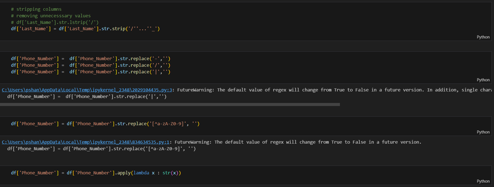
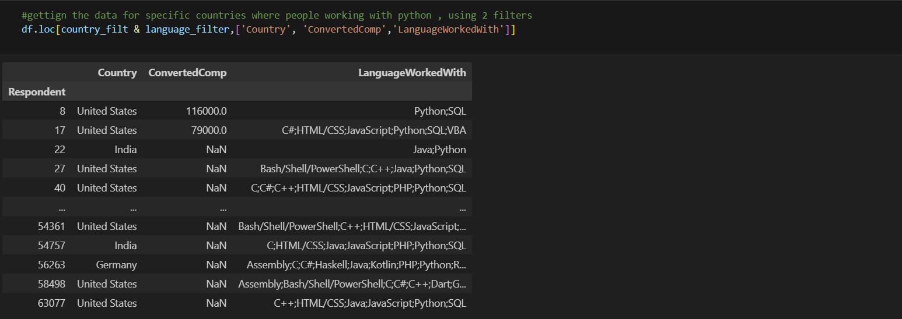
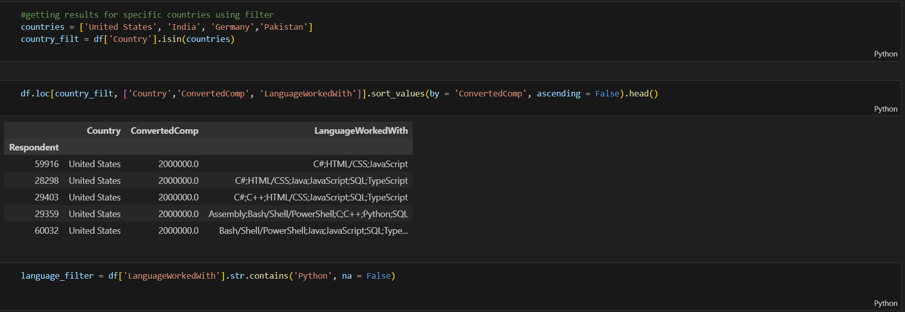
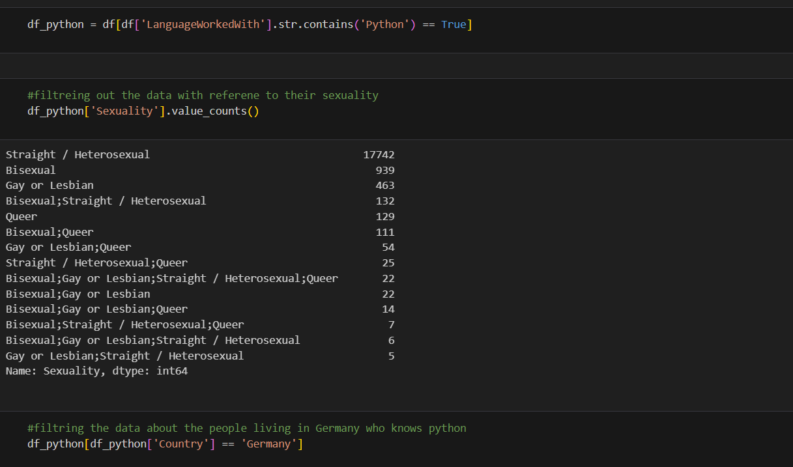
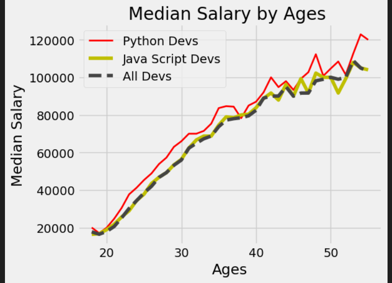
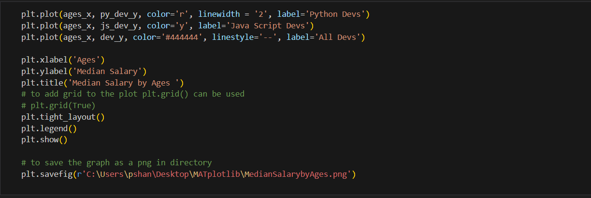
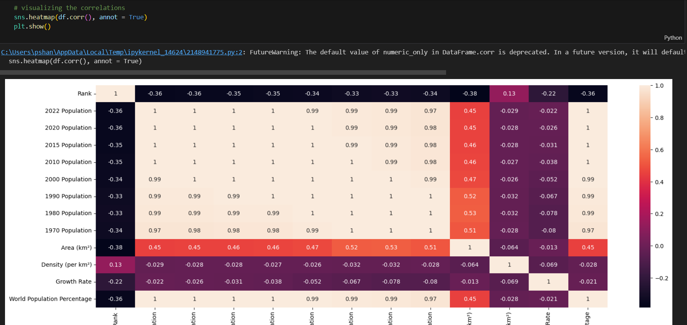
Data Analysis and Visualization (Microsoft Excel)
Projects: McDonald Sales Analysis and Visualization using Excel
Objective/Problem:
Conducted a comprehensive analysis of McDonald sales data to identify trends, assess performance, and provide insights for optimizing sales strategies.
Data Cleaning and Preprocessing:
Performed data cleaning within Excel to address issues such as missing values, duplicates, and formatting inconsistencies. Ensured data accuracy and reliability for meaningful analysis.
Descriptive Statistics:
Utilized Excel functions to calculate key descriptive statistics, including total revenue, average selling price, and sales quantity. Employed pivot tables to summarize and aggregate data for a clearer overview.
Time Series Analysis:
Created line charts and trendlines to analyze sales patterns over time. Identified seasonality, peak sales periods, and any notable fluctuations in demand.
Product Performance Metrics:
Utilized Excel formulas to calculate product-specific metrics such as sales growth rates, inventory turnover, and contribution margins. Visualized this information through charts and graphs.
Customer Segmentation:
Employed Excel's sorting and filtering features to segment customers based on various criteria, such as purchasing frequency, average spending, and loyalty. Analyzed the behavior and preferences of different customer segments.
Sales Forecasting:
Implemented forecasting models using Excel functions to predict future sales trends. Leveraged historical data to make informed projections and support inventory planning.
Data Visualization:
Created visually appealing charts and graphs, including bar charts, Donut charts, and heat maps, to present key insights. Excel's conditional formatting was utilized to highlight important trends and outliers.
Results and Findings:
Identified top-performing products, customer segments, and sales channels. Provided actionable insights for inventory management, marketing strategies, and product development.
Conclusion and Next Steps:
The McDonald Analysis project using Excel successfully provided valuable insights to optimize sales strategies. Future steps involve refining the analysis, incorporating additional data sources, and implementing data-driven decision-making to further enhance the efficiency and effectiveness of bike sales operations.
- Following are some of the snippets from the project
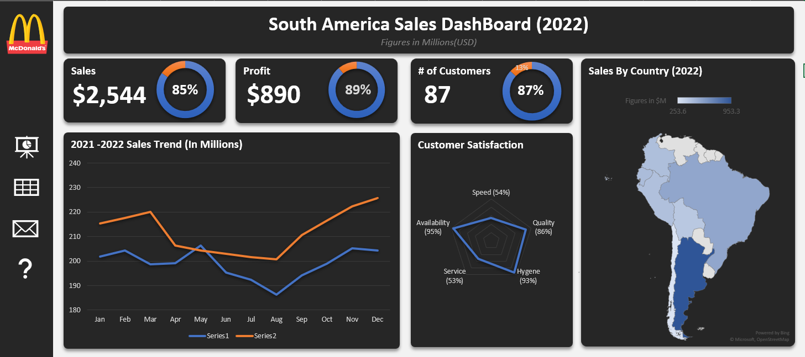
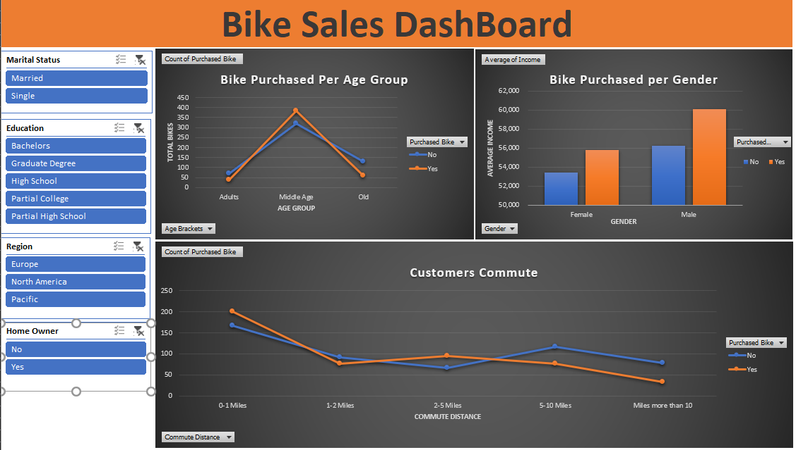
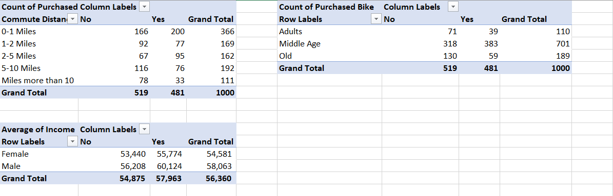
GitHub Repository